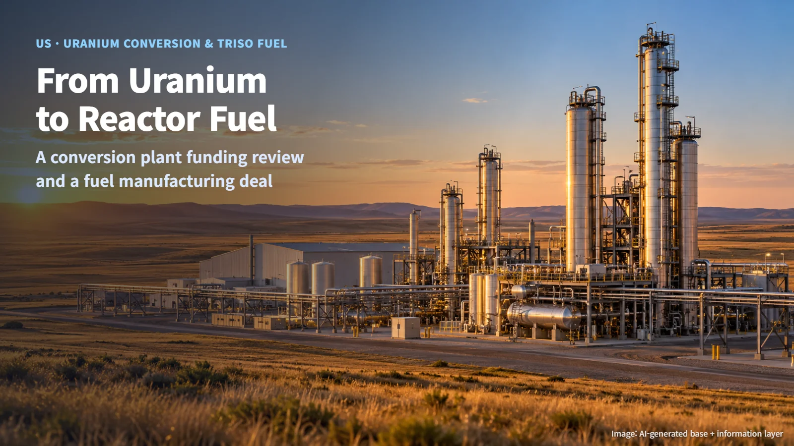
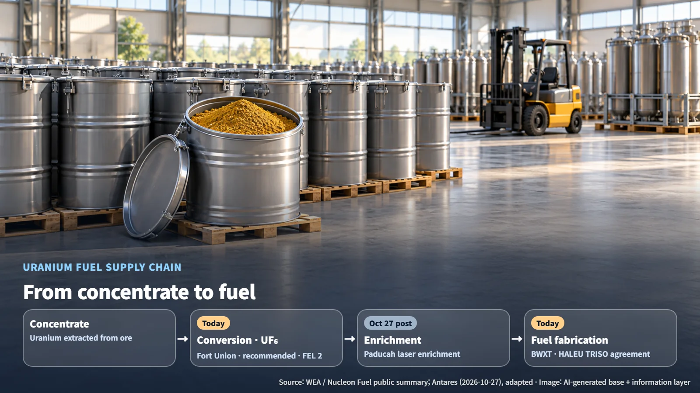
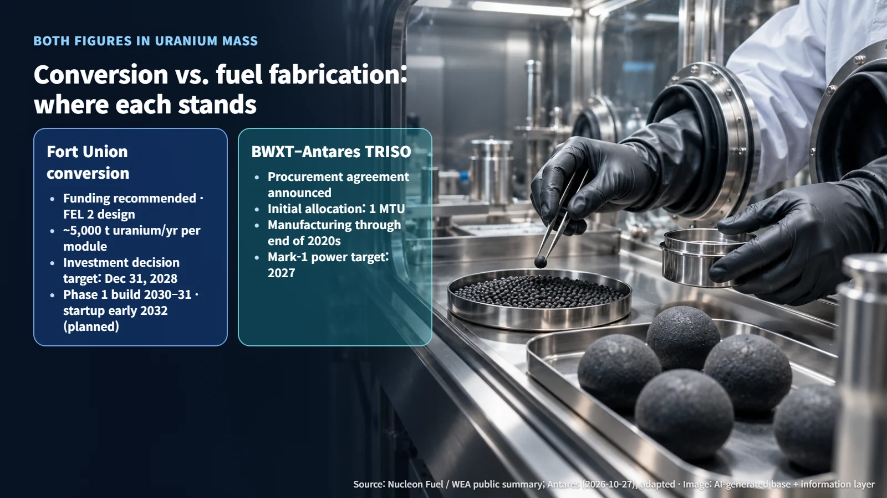

United States · Uranium Fuel Supply Chain
From Ore to Fuel: Wyoming's Conversion Plant Funding Review and a TRISO Fuel Manufacturing Deal
Wyoming weighs $20 million for the Fort Union uranium conversion plant while BWXT signs on to make HALEU TRISO fuel for Antares microreactors.
Many readers wonder how uranium dug out of the ground ends up as fuel inside a reactor. The answer is that it passes through a series of plants, one after another, before it becomes fuel. In recent weeks, two links in that chain in the United States made news at the same time: conversion, which turns uranium into a chemical compound, and fuel fabrication, which makes the finished fuel. Let us follow where each of these projects stands today.

The Path from Uranium to Fuel: Where Conversion Fits
Uranium coming out of a mine is first turned into concentrate, an intermediate product made by extracting and collecting the uranium from the ore. Conversion is the step that turns this concentrate into uranium hexafluoride (UF₆). UF₆ is a compound of uranium and fluorine, and it is the form an enrichment plant takes in as feed. Once enriched, the uranium goes to a fuel fabrication plant, where it is made into fuel that can be loaded into a reactor.
In short, the path runs concentrate → conversion (UF₆) → enrichment → fuel fabrication. If enrichment, the subject of our October 27 post on laser enrichment at Paducah, is the middle link, today's two stories sit just before it (conversion) and just after it (fuel fabrication).

- Conversion: Fort Union Uranium Conversion Facility in Wyoming — recommended for state funding, at front-end loading stage 2 (FEL 2) of pre-design
- Fuel fabrication: BWXT–Antares TRISO fuel agreement — procurement agreement announced
Within the same supply chain, the front end is preparing designs and financing, while the back end is reserving production line capacity. Seeing the links of the chain move at different speeds is exactly why these two stories are worth reading together.
Fort Union: From Funding Recommendation to Groundbreaking
On October 15, the Wyoming Energy Authority (WEA) recommended $20 million in funding for Nucleon Fuel's Fort Union Uranium Conversion Facility. The facility is planned for the Fort Union Industrial Park in Campbell County, near Gillette. Its SMT-5000 module, which uses a wet conversion process, is being designed to produce about 5,000 tonnes of uranium per year in UF₆ form. The plan prepares three phases of the same size for planning and licensing, builds Phase 1 first, and then expands according to demand and financing conditions.
The funding package totals $40 million: $20 million from the state plus $20 million in private money. That structure follows the Energy Dominance Fund's 1:1 matching rule, which requires at least one private dollar for every state dollar. The estimated construction investment for Phase 1 is about $575 million, so $40 million ÷ about $575 million ≈ 0.07. Worked out, the construction readiness money comes to roughly 7% of the main construction cost. This funding, in other words, is preparation money for assembling design, licensing and financing documents ahead of groundbreaking.
Five steps follow the recommendation: public comment through November 16; a recommendation from the legislature's Management Council and a legal sufficiency opinion from the Attorney General; a final decision by the Governor; contract negotiation by WEA; and finally a report to the legislative committee 30 days before spending, followed by contract signing. Under the fund guidelines, reimbursement covers work carried out after the contract is signed, so the money is put to use once a contract is in place.
Design work completed the process flow diagrams and heat and material balances in FEL 2 in 2026, and FEL 3, with basic design and regulatory submittals, is planned for 2027. On licensing, the company told the NRC in April that it intends to apply for a license under 10 CFR Part 40. The target for construction readiness and an investment decision is December 31, 2028. Phase 1 construction is planned for 2030–2031, subject to regulatory approval and secured financing, with commissioning planned for early 2032.
The TRISO Manufacturing Deal: What One Tonne of Uranium Means
On October 27, Antares announced that it had signed a procurement agreement with BWXT for TRISO fuel based on high-assay low-enriched uranium (HALEU) for its microreactors. HALEU is uranium enriched to a higher level than ordinary light-water reactor fuel, and TRISO is a particle fuel in which tiny fuel kernels are wrapped in several coating layers. The fuel is planned to be made at BWXT's facility in Lynchburg, Virginia, on the production line that made fuel for Project Pele and for Antares Mark-0 and Mark-1.
The agreement covers manufacturing through the end of the 2020s, and the initial allocation is one metric tonne of uranium by uranium mass (1 MTU). Pricing and year-by-year delivery volumes have not been disclosed.
Now let us put the two numbers side by side. Fort Union's roughly 5,000 tonnes per year and the TRISO deal's one tonne are both counted as the mass of the element uranium. UF₆ and finished fuel each carry the weight of other elements as well, so this shared uranium-mass basis is the accurate way to compare the two projects. The gap in scale comes from the nature of each process. Conversion is a bulk process that feeds commercial enrichment, while 1 MTU is an allocation that secures the first manufacturing volume of microreactor fuel.
Next Checkpoints: November 16, the 2028 Investment Decision, and the 2027 Power Target
For Fort Union, the near-term milestones are a community meeting in Gillette on October 28, the close of public comment on November 16, and the Governor's final decision that follows. After that come confirmation of the private matching funds and signing of the funding contract, the December 31, 2028 target for construction readiness and an investment decision, and submission of the NRC license application.
On the BWXT–Antares side, the next items to watch are firm orders and delivery schedules for the initial allocation, along with the terms for later volume increases. Citing its experience reaching criticality with BWXT fuel, Antares has set a target of generating power with Mark-1 in 2027. Testing and operating approvals come first on the way to that target.

Behind a single fuel assembly lies a long chain of conversion, enrichment and fuel fabrication. The next time you read a nuclear news story, ask which link in that chain just moved, and the news will come into much sharper focus.